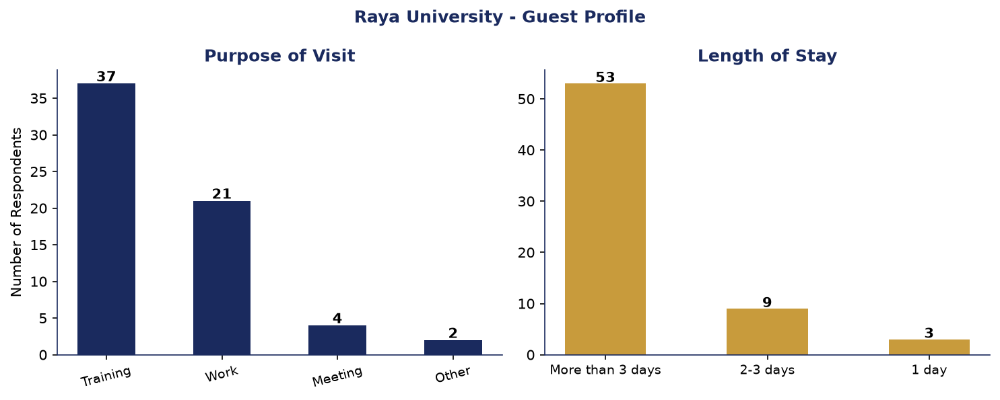
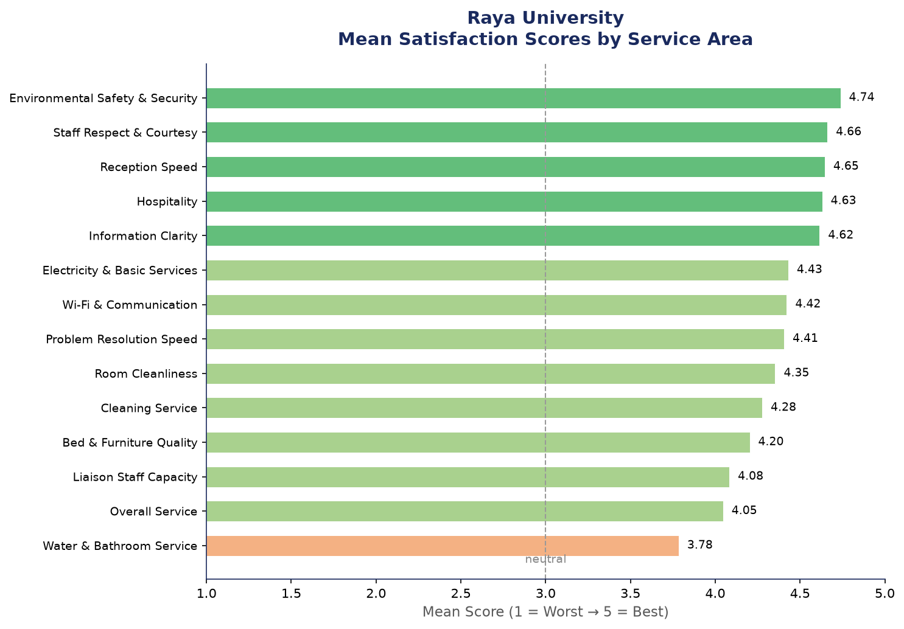
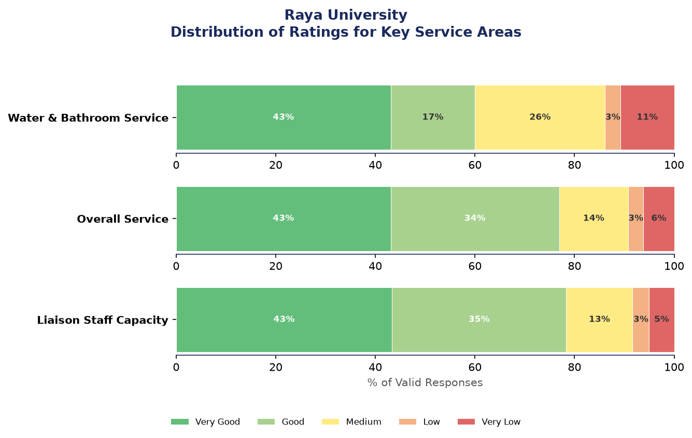
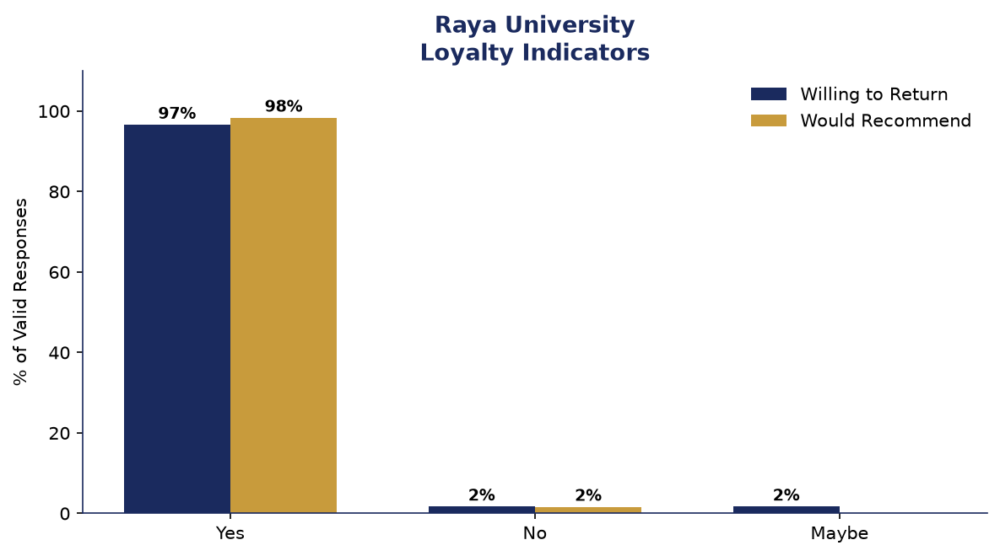

A guest satisfaction survey was conducted at the Liaison Office Guest House to assess the quality of service provided to visitors. A total of 65 guests completed the survey, rating their experience across reception, accommodation, support services, and overall satisfaction.
Overall, guests reported a high level of satisfaction, with an average score of 4.38 out of 5 across all measured service dimensions. The strongest-performing areas were:
while water and bathroom service received the most varied feedback and represents the clearest opportunity for improvement.
96.6% of respondents indicated they would return to the guesthouse, and 98.4% said they would recommend it to others — both strong indicators of guest loyalty and satisfaction.
Data was collected through a structured, bilingual (Amharic/English) paper-based questionnaire administered to guests of the Liaison Office Guest House. Responses were later digitized and analyzed.

| Purpose | Count | Percent |
|---|---|---|
| Training | 37 | 56.9% |
| Work | 21 | 32.3% |
| Meeting | 4 | 6.2% |
| Other | 2 | 3.1% |
| Duration | Count | Percent |
|---|---|---|
| More than 3 days | 53 | 81.5% |
| 2-3 days | 9 | 13.8% |
| 1 day | 3 | 4.6% |
The overall service satisfaction score averages 4.05 out of 5.0.
| Rating | Count | Percent |
|---|---|---|
| Very Good | 28 | 43.1% |
| Good | 22 | 33.8% |
| Medium | 9 | 13.8% |
| Low | 2 | 3.1% |
| Very Low | 4 | 6.2% |



| Service Area | N | Mean | Median | Std Dev | Min | Max |
|---|---|---|---|---|---|---|
| Environmental Safety & Security High | 65 | 4.74 | 5.0 | 0.59 | 2 | 5 |
| Staff Respect & Courtesy High | 65 | 4.66 | 5.0 | 0.71 | 2 | 5 |
| Reception Speed High | 65 | 4.65 | 5.0 | 0.67 | 2 | 5 |
| Hospitality High | 65 | 4.63 | 5.0 | 0.65 | 3 | 5 |
| Information Clarity High | 65 | 4.62 | 5.0 | 0.63 | 3 | 5 |
| Electricity & Basic Services Good | 65 | 4.43 | 5.0 | 0.85 | 2 | 5 |
| Wi-Fi & Communication Good | 64 | 4.42 | 5.0 | 1.02 | 1 | 5 |
| Problem Resolution Speed Good | 64 | 4.41 | 4.5 | 0.66 | 3 | 5 |
| Room Cleanliness Good | 65 | 4.35 | 5.0 | 0.78 | 2 | 5 |
| Cleaning Service Good | 65 | 4.28 | 5.0 | 0.98 | 1 | 5 |
| Bed & Furniture Quality Good | 64 | 4.20 | 4.0 | 0.80 | 2 | 5 |
| Liaison Staff Capacity Good | 60 | 4.08 | 4.0 | 1.08 | 1 | 5 |
| Overall Service Good | 65 | 4.05 | 4.0 | 1.12 | 1 | 5 |
| Water & Bathroom Service Medium | 65 | 3.78 | 4.0 | 1.33 | 1 | 5 |
| Response | Count | Percent | Valid % |
|---|---|---|---|
| Yes | 57 | 87.7% | 96.6% |
| Missing | 6 | 9.2% | 10.2% |
| No | 1 | 1.5% | 1.7% |
| Maybe | 1 | 1.5% | 1.7% |
| Response | Count | Percent | Valid % |
|---|---|---|---|
| Yes | 60 | 92.3% | 98.4% |
| Missing | 4 | 6.2% | 6.6% |
| No | 1 | 1.5% | 1.6% |
Based on the survey findings, the following recommendations are proposed: